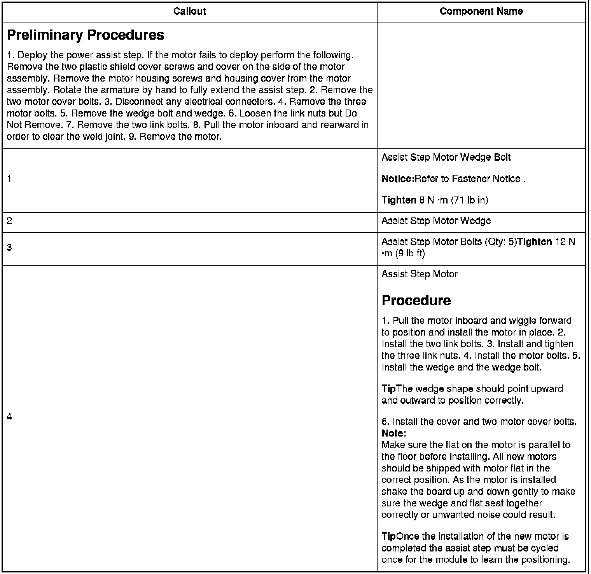

Auxiliary Step / Running Board Motor: Service and Repair
Assist Step Motor Replacement

Preliminary Procedures
Notice:Refer to.
TightenTighten
Procedure
TipThe wedge shape should point upward and outward to position correctly.
Note:Make sure the flat on the motor is parallel to the floor before installing. All new motors should be shipped with motor flat in the correct position. As the motor is installed shake the board up and down gently to make sure the wedge and flat seat together correctly or unwanted noise could result.
TipOnce the installation of the new motor is completed the assist step must be cycled once for the module to learn the positioning.